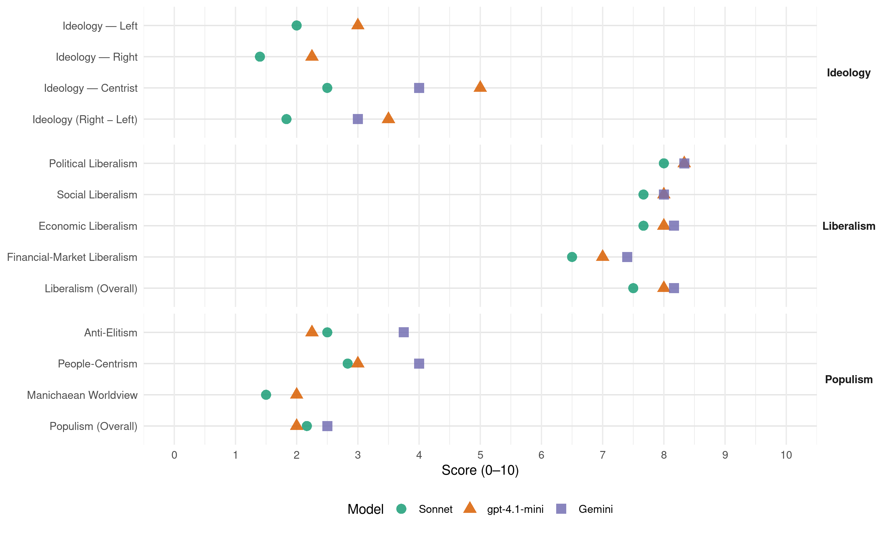

PRL-FDF-MCC (Belgium, 1999)
manifesto_id 21425_199906
Get full text: This site shows derived annotations and short verbatim quotes only. The full manifesto text is © Manifesto Project / WZB — obtain it via manifesto-project.wzb.eu using the manifesto_id above.
Headline scores
| Dimension | Sonnet | gpt-4.1-mini | Gemini |
|---|---|---|---|
| Populism (Overall) | 2.2 | 2.0 | 2.5 |
| Anti-Elitism | 2.5 | 2.2 | 3.8 |
| People-Centrism | 2.8 | 3.0 | 4.0 |
| Manichaean Worldview | 1.5 | 2.0 | – |
| Ideology (Right − Left) | 1.8 | 3.5 | 3.0 |
| Liberalism (Overall) | 7.5 | 8.0 | 8.2 |
| Political Liberalism | 8.0 | 8.3 | 8.3 |
| Social Liberalism | 7.7 | 8.0 | 8.0 |
| Economic Liberalism | 7.7 | 8.0 | 8.2 |
| Financial-Market Liberalism | 6.5 | 7.0 | 7.4 |
Evidence per dimension
Economic Liberalism
Gemini · score 9.0 · verified · chunk 1
“liberté d’entreprendre est au cœur”
La liberté d’entreprendre est au cœur du combat libéral. La puissance publique ne doit pas faire
Gemini · score 9.0 · verified · chunk 2
“déterminante qu’ils occupent dans une économie”
Il importe de rendre aux entrepreneurs et aux investissements privés la place naturellement déterminante qu’ils occupent dans une économie de marché
Gemini · score 7.0 · verified · chunk 3
“fonctionnement du marché du travail”
les jeunes non qualifiés sont les premières victimes du fonctionnement du marché du travail. Garantir un accès à un enseignement de qualité
Gemini · score 8.0 · verified · chunk 4
“favoriser la création d’un véritable marché concurrentiel”
permettre à l’offre de tels services de se structurer rapidement pour favoriser la création d’un véritable marché concurrentiel. C’est pourquoi
Gemini · score 8.0 · verified · chunk 5
“confiance accordée à l’initiative personnelle”
redressement wallon réside, pour une large part dans la confiance accordée à l’initiative personnelle, à la liberté exploratrice
Gemini · score 8.0 · verified · chunk 6
“s’intégrer dans l’économie mondiale”
s’agit de permettre à ces pays de s’intégrer dans l’économie mondiale et de permettre à leur population de bénéficier du développement
gpt-4.1-mini · score 9.0 · verified · chunk 1
“La liberté d’entreprendre est au cœur du combat libéral”
La liberté d’entreprendre est au cœur du combat libéral. La puissance publique ne doit pas faire ce que l’individu fait mieux qu’elle.
gpt-4.1-mini · score 8.0 · verified · chunk 2
“stimuler une recapitalisation des entreprises”
Il est plus que temps de rendre aux entrepreneurs et aux investissements privés la place naturellement déterminante qu’ils occupent dans une économie de marché. A cette fin, la Fédération PRL FDF MCC envisage de mettre en œ uvre plusieurs mesures qui permettront de stimuler une recapitalisation des entreprises.
gpt-4.1-mini · score 7.0 · verified · chunk 3
“le PRL FDF MCC entend promouvoir à travers l’enseignement professionnel et technique”
Le PRL FDF MCC entend promouvoir à travers l’enseignement professionnel et technique de qualification une voie d’excellence en opérant un changement de mentalité et en osant les réformes qui généraliseront l’enseignement en alternance.
gpt-4.1-mini · score 8.0 · verified · chunk 4
“stimuler la création d’emplois peu qualifiés, via la satisfaction des besoins nouveaux en services de proximité”
Le titre-service constitue un moyen de réorienter les dépenses des ménages vers des activités de services, créatrices d’emplois en permettant de créer un nouveau tissu d’indépendants et de PME.
gpt-4.1-mini · score 8.0 · verified · chunk 5
“La Fédération PRL FDF MCC estime qu’elle doit également veiller à la dimension sociale de la politique commerciale internationale”
La Fédération PRL FDF MCC estime qu’elle doit également veiller à la dimension sociale de la politique commerciale internationale. Outre l’attachement viscéral des libéraux au respect de la personne humaine, il est évident que nous avons tout intérêt à promouvoir l’application des normes sociales sur le plan international afin de nous prémunir contre la concurrence déloyale que constitue le dumping social.
gpt-4.1-mini · score 8.0 · verified · chunk 6
“commerce international plus équitable”
Au niveau macro-économique, la Fédération PRL FDF MCC plaide pour un commerce international plus équitable. Au niveau des politiques menées localement, les secteurs prioritaires sont le développement rural, la santé publique, l’éducation, les infrastructures de base et le renforcement des structures institutionnelles.
Sonnet · score 9.0 · verified · chunk 1
“LA LIBERTÉ D’ENTREPRENDRE EST AU CŒ UR DU COMBAT LIBÉRAL”
LA LIBERTÉ D’ENTREPRENDRE EST AU CŒ UR DU COMBAT LIBÉRAL. LA PUISSANCE PUBLIQUE NE DOIT PAS FAIRE CE QUE L’INDIVIDU FAIT MIEUX QU’ELLE.
Sonnet · score 8.0 · verified · chunk 2
“place naturellement déterminante qu’ils occupent dans une économie de marché”
Il importe de rendre aux entrepreneurs et aux investissements privés la place naturellement déterminante qu’ils occupent dans une économie de marché et cesser de véhiculer l’image culpabilisante de l’entrepreneur.
Sonnet · score 6.0 · verified · chunk 3
“incitants fiscaux afin de favoriser la production”
développer des incitants fiscaux afin de favoriser la production cinématographique ; valoriser tous les aspects de notre patrimoine culturel pour en faire un important support de l’activité touristique
Sonnet · score 7.0 · verified · chunk 4
“créer un véritable marché concurrentiel”
permettre à l’offre de tels services de se structurer rapidement pour favoriser la création d’un véritable marché concurrentiel.
Sonnet · score 8.0 · verified · chunk 5
“La Belgique est fondamentalement une nation attachée au libre-échange”
La Belgique est fondamentalement une nation attachée au libre-échange et est donc partisane d’une libéralisation, la plus complète possible, des échanges internationaux.
Sonnet · score 8.0 · verified · chunk 6
“Rétablir la compétitivité des entreprises”
IV. RENFORCER L’ASSISE ÉCONOMIQUE POUR GAGNER LA BATAILLE DE L’EMPLOI 1. Rétablir la compétitivité des entreprises 2. Introduire des éléments de souplesse dans les négociations salariales
Financial-Market Liberalism
Gemini · score 8.0 · verified · chunk 1
“développement de marchés boursiers pour entreprises”
Favoriser le développement de marchés boursiers pour entreprises de haute technologie et à croissance rapide.
Gemini · score 8.0 · verified · chunk 2
“réorienter cette épargne vers le capital à”
Une masse importante de l’épargne est orientée vers des placements en fonds publics et participe peu à la stimulation de notre économie. Dans le but de réorienter cette épargne vers le capital à risque
Gemini · score 7.0 · verified · chunk 3
“fonds de pensions des entreprises”
favoriser par des déductions fiscales le développement des épargnes retraites, soit par les assurances groupes et les fonds de pensions des entreprises, soit par l’assurance individuelle
Gemini · score 7.0 · verified · chunk 5
“libre circulation des capitaux”
se caractérise par une libre circulation des capitaux, des biens et services.
Gemini · score 7.0 · verified · chunk 6
“financement et d’assurance-crédit des exportations”
indispensable de renforcer les moyens d’action au service de notre expansion économique à l’étranger. a) Renforcer les instruments de financement et d’assurance-crédit des exportations. b) Parallèlement à ces moyens “classiques”, la
gpt-4.1-mini · score 7.0 · verified · chunk 1
“Favoriser l’accès au capital à risque et au crédit”
Nous voulons rendre le capital à risque plus accessible aux entreprises qu’elles soient en phase de démarrage ou de consolidation. Les instruments existants doivent être dynamisés et réorganisés.
gpt-4.1-mini · score 7.0 · verified · chunk 2
“activation du Fonds de Participation en activant les avoirs du Fonds de protection des dépôts”
Nous entendons reprendre l’alimentation du Fonds de Participation en activant les avoirs du Fonds de protection des dépôts dont la création a été imposée par une directive de l’Union européenne du 30 mai 1994 transposée en droit belge par une loi du 22 mars 1993.
gpt-4.1-mini · score 7.0 · verified · chunk 5
“Le financement des recherches appliquées devrait être accompagné de manière systématique d’une étude de marché et d’une prospection financière”
Le financement des recherches appliquées devrait être accompagné de manière systématique d’une étude de marché et d’une prospection financière relative au coût de la production et de la commercialisation.
Sonnet · score 7.0 · verified · chunk 1
“FAVORISER LE DÉVELOPPEMENT DE MARCHÉS BOURSIERS”
FAVORISER LE DÉVELOPPEMENT DE MARCHÉS BOURSIERS POUR ENTREPRISES DE HAUTE TECHNOLOGIE ET À CROISSANCE RAPIDE. La création en 1996 des bourses d’actions européennes EASDASQ et des « euros nouveaux marchés » constitue dans ce cadre, une étape importante.
Sonnet · score 7.0 · verified · chunk 2
“réorienter cette épargne vers le capital à risque”
Dans le but de réorienter cette épargne vers le capital à risque, nous proposons : l’exonération de précompte pendant 3 ans – à dater du moment où la société distribue un dividende – pour les nouvelles sociétés
Sonnet · score 6.0 · verified · chunk 3
“épargne finalisée, à mettre en œuvre avec les Compagnies d’assurance”
Inciter les familles à UNE ÉPARGNE FINALISÉE, à mettre en œuvre avec les Compagnies d’assurance, en vue de la poursuite des études dans l’enseignement supérieur
Sonnet · score 6.0 · verified · chunk 4
“lutte contre le blanchiment de l’argent de la drogue”
l’activation des peines patrimoniales et la lutte contre le blanchiment de l’argent de la drogue sont les axes d’une politique répressive renforcée
Sonnet · score 6.0 · verified · chunk 5
“une taxation minimale des revenus du capital”
Pour réaliser cette convergence fiscale, il faut envisager : une taxation minimale des revenus du capital . un rapprochement des taux d’impôts sur les sociétés . la finalisation de l’harmonisation de la TVA.
Sonnet · score 7.0 · verified · chunk 6
“Favoriser l’accès au capital à risque et au crédit”
3. Donner un nouvel élan aux PME, artisans et professions libérales 4. Favoriser l’accès au capital à risque et au crédit 5. Recherche et développement
Political Liberalism
Gemini · score 9.0 · verified · chunk 1
“démocratie fondée sur les institutions parlementaires”
Le seul système politique qui garantisse les droits est la démocratie fondée sur les institutions parlementaires élues au suffrage universel.
Gemini · score 8.0 · verified · chunk 2
“respecter scrupuleusement ce principe et le faire”
Le principe d’une stricte égalité entre les hommes et femmes. Les médias. l’enseignement, l’éducation permanente, la culture et le monde du travail doivent respecter scrupuleusement ce principe et le faire partager
Gemini · score 8.0 · verified · chunk 3
“développement d’une société démocratique”
les élèves à être des citoyens responsables, capables de contribuer au développement d’une société démocratique, solidaire, pluraliste et ouverte aux autres cultures.
Gemini · score 9.0 · verified · chunk 4
“restoration de l’Etat de droit pour l’ensemble des citoyens”
L’objectif des Assises de la démocratie est la restauration de l’Etat de droit pour l’ensemble des citoyens. Pour ce faire
Gemini · score 8.0 · verified · chunk 5
“système démocratique libéral”
notre référence est celle du système démocratique libéral comme les Etats-unis l’ont
Gemini · score 8.0 · verified · chunk 6
“respect de l’Etat de droit”
droits des individus et les droits des collectivités, et respect de l’Etat de droit. L’aide que nous entendons promouvoir se veut responsable
gpt-4.1-mini · score 9.0 · verified · chunk 1
“Le seul système politique qui garantisse les droits et libertés des citoyens est la démocratie”
Le seul système politique qui garantisse les droits et libertés des citoyens est la démocratie fondée sur les institutions parlementaires élues au suffrage universel.
gpt-4.1-mini · score 8.0 · verified · chunk 2
“respect des principes constitutionnels d’égalité des citoyens belges et européens devant la loi et l’accès à l’emploi”
le respect des principes constitutionnels d’égalité des citoyens belges et européens devant la loi et l’accès à l’emploi, ainsi qu’à la promotion dans la carrière professionnelle.
gpt-4.1-mini · score 8.0 · verified · chunk 3
“l’école doit préparer tous les élèves à être des citoyens responsables”
la démocratie doit également s’apprendre à l’école : comme le précise le décret mission. l’école doit préparer tous les élèves à être des citoyens responsables, capables de contribuer au développement d’une société démocratique, solidaire, pluraliste et ouverte aux autres cultures.
gpt-4.1-mini · score 9.0 · verified · chunk 4
“la restauration de l’Etat de droit pour l’ensemble des citoyens”
L’objectif des Assises de la démocratie est la restauration de l’Etat de droit pour l’ensemble des citoyens. Pour ce faire différents leviers sont utilisés : ¨ le décumul ¨ la fin de la dépendance financière des partis pour les campagnes électorales ¨ la transparence de la comptabilité des partis
gpt-4.1-mini · score 8.0 · verified · chunk 5
“LE PARLEMENT EUROPÉEN DOIT AUSSI OUVRIR DES CANAUX PERMANENTS ET PLUS LARGES AVEC LES PARLEMENTS NATIONAUX”
LE PARLEMENT EUROPÉEN DOIT AUSSI OUVRIR DES CANAUX PERMANENTS ET PLUS LARGES AVEC LES PARLEMENTS NATIONAUX ET LES ASSEMBLÉES RÉGIONALES. Il évitera ainsi de s’enfermer dans sa tour de Babel tout en obtenant un soutien bien nécessaire des Parlements des pays et régions de l’Union européenne.
gpt-4.1-mini · score 8.0 · verified · chunk 6
“respect des libertés, tolérance, humanisme, équilibre entre les droits des individus et les droits des collectivités, et respect de l’Etat de droit”
notre devoir consiste à leur rendre confiance et espoir par tous les moyens possibles, dans le cadre des valeurs de base d’un libéralisme social : respect des libertés, tolérance, humanisme, équilibre entre les droits des individus et les droits des collectivités, et respect de l’Etat de droit. L’aide que nous entendons promouvoir se veut responsable et intégrée.
Sonnet · score 9.0 · verified · chunk 1
“LA SÉPARATION DES POUVOIRS LÉGISLATIF, EXÉCUTIF ET JUDICIAIRE”
LA SÉPARATION DES POUVOIRS LÉGISLATIF, EXÉCUTIF ET JUDICIAIRE EST UNE GARANTIE ORGANIQUE DE LA DÉMOCRATIE. L’équilibre de l’Etat est fondé sur l’articulation harmonieuse de ces trois pouvoirs distincts.
Sonnet · score 8.0 · verified · chunk 2
“réformes démocratiques assurant la force participative directe”
les réformes démocratiques assurant la force participative directe de tous, comme le référendum, la consultation populaire … le respect des principes constitutionnels d’égalité des citoyens belges et européens devant la loi
Sonnet · score 7.0 · verified · chunk 3
“La démocratie doit également s’apprendre à l’école”
La démocratie doit également s’apprendre à l’école : comme le précise le décret mission. l’école doit préparer tous les élèves à être des citoyens responsables, capables de contribuer au développement d’une société démocratique, solidaire, pluraliste
Sonnet · score 8.0 · verified · chunk 4
“restauration de l’Etat de droit pour l’ensemble des citoyens”
L’objectif des Assises de la démocratie est la restauration de l’Etat de droit pour l’ensemble des citoyens.
Sonnet · score 8.0 · verified · chunk 5
“Le refus du Premier ministre de rencontrer les bourgmestres de la périphérie est un camouflet à la démocratie”
Le refus du Premier ministre de rencontrer les bourgmestres de la périphérie est un camouflet à la démocratie ainsi qu’à la loyauté fédérale. Seul compétent pour régler ce problème, le gouvernement fédéral préfère enterrer ce dérapage flamand.
Sonnet · score 8.0 · verified · chunk 6
“La revitalisation de la démocratie”
PARTICIPATION I. LA REVITALISATION DE LA DÉMOCRATIE 1. La notion de démocratie 2. L’homme politique et le pouvoir politique
Liberalism (Overall)
Gemini · score 9.0 · verified · chunk 1
“liberté d’entreprendre est au cœur”
La liberté d’entreprendre est au cœur du combat libéral. La puissance publique ne doit pas faire
Gemini · score 8.0 · verified · chunk 2
“déterminante qu’ils occupent dans une économie”
Il importe de rendre aux entrepreneurs et aux investissements privés la place naturellement déterminante qu’ils occupent dans une économie de marché
Gemini · score 8.0 · verified · chunk 3
“une politique libérale de la famille”
Pour nous, qui fondons nos objectifs politiques sur la liberté, la politique familiale doit créer… Une politique libérale de la famille ne peut se concevoir qu’en tant que politique d’accompagnement
Gemini · score 8.0 · verified · chunk 4
“l’humanisme libéral repose précisément sur le respect du libre choix”
ne privilégie aucun “modèle” familial, parce que l’humanisme libéral repose précisément sur le respect du libre choix de vie des
Gemini · score 8.0 · verified · chunk 5
“système démocratique libéral”
notre référence est celle du système démocratique libéral comme les Etats-unis l’ont
Gemini · score 8.0 · verified · chunk 6
“valeurs de base d’un libéralisme social”
confiance et espoir par tous les moyens possibles, dans le cadre des valeurs de base d’un libéralisme social : respect des libertés, tolérance, humanisme, équilibre
gpt-4.1-mini · score 8.0 · verified · chunk 1
“Le libéralisme rassemble sur les valeurs humanistes. Il est la doctrine politique qui concilie liberté et organisation sociale.”
Le libéralisme rassemble sur les valeurs humanistes. Il est la doctrine politique qui concilie liberté et organisation sociale. Il préserve le caractère personnel des libertés fondamentales.
gpt-4.1-mini · score 8.0 · verified · chunk 2
“stimuler une recapitalisation des entreprises”
Il est plus que temps de rendre aux entrepreneurs et aux investissements privés la place naturellement déterminante qu’ils occupent dans une économie de marché. A cette fin, la Fédération PRL FDF MCC envisage de mettre en œ uvre plusieurs mesures qui permettront de stimuler une recapitalisation des entreprises.
gpt-4.1-mini · score 8.0 · verified · chunk 3
“l’école doit préparer tous les élèves à être des citoyens responsables”
la démocratie doit également s’apprendre à l’école : comme le précise le décret mission. l’école doit préparer tous les élèves à être des citoyens responsables, capables de contribuer au développement d’une société démocratique, solidaire, pluraliste et ouverte aux autres cultures.
gpt-4.1-mini · score 8.0 · verified · chunk 4
“la restauration de l’Etat de droit pour l’ensemble des citoyens”
L’objectif des Assises de la démocratie est la restauration de l’Etat de droit pour l’ensemble des citoyens. Pour ce faire différents leviers sont utilisés : ¨ le décumul ¨ la fin de la dépendance financière des partis pour les campagnes électorales ¨ la transparence de la comptabilité des partis
gpt-4.1-mini · score 8.0 · verified · chunk 5
“LE PARLEMENT EUROPÉEN DOIT AUSSI OUVRIR DES CANAUX PERMANENTS ET PLUS LARGES AVEC LES PARLEMENTS NATIONAUX”
LE PARLEMENT EUROPÉEN DOIT AUSSI OUVRIR DES CANAUX PERMANENTS ET PLUS LARGES AVEC LES PARLEMENTS NATIONAUX ET LES ASSEMBLÉES RÉGIONALES. Il évitera ainsi de s’enfermer dans sa tour de Babel tout en obtenant un soutien bien nécessaire des Parlements des pays et régions de l’Union européenne.
gpt-4.1-mini · score 8.0 · verified · chunk 6
“respect des libertés, tolérance, humanisme, équilibre entre les droits des individus et les droits des collectivités, et respect de l’Etat de droit”
notre devoir consiste à leur rendre confiance et espoir par tous les moyens possibles, dans le cadre des valeurs de base d’un libéralisme social : respect des libertés, tolérance, humanisme, équilibre entre les droits des individus et les droits des collectivités, et respect de l’Etat de droit. L’aide que nous entendons promouvoir se veut responsable et intégrée.
Sonnet · score 8.0 · verified · chunk 1
“l’éthique de la liberté et de la responsabilité”
Elles ont toutes été évaluées et forment un projet cohérent basé sur une éthique fermement fondée, l’éthique de la liberté et de la responsabilité.
Sonnet · score 8.0 · verified · chunk 2
“rendre aux entrepreneurs et aux investissements privés la place”
Il importe de rendre aux entrepreneurs et aux investissements privés la place naturellement déterminante qu’ils occupent dans une économie de marché
Sonnet · score 7.0 · verified · chunk 3
“société démocratique, solidaire, pluraliste et ouverte”
l’école doit préparer tous les élèves à être des citoyens responsables, capables de contribuer au développement d’une société démocratique, solidaire, pluraliste et ouverte aux autres cultures
Sonnet · score 7.0 · verified · chunk 4
“restauration de l’Etat de droit pour l’ensemble des citoyens”
L’objectif des Assises de la démocratie est la restauration de l’Etat de droit pour l’ensemble des citoyens.
Sonnet · score 7.0 · verified · chunk 5
“notre référence est celle du système démocratique libéral”
Dans ce sens, notre référence est celle du système démocratique libéral comme les Etats-unis l’ont mis en place chez eux. Il faut adhérer à l’idée d’une Europe fédérale.
Sonnet · score 8.0 · verified · chunk 6
“libéralisme social : respect des libertés, tolérance, humanisme”
dans le cadre des valeurs de base d’un libéralisme social : respect des libertés, tolérance, humanisme, équilibre entre les droits des individus et les droits des collectivités
Anti-Elitism
Gemini · score 3.0 · verified · chunk 1
“dérives, d’échecs, de faillites de l’Etat”
Au cours de la dernière décennie, les exemples de dérives, d’échecs, de faillites de l’Etat se sont multipliés.
Gemini · score 4.0 · verified · chunk 2
“la politisation outrancière du système de soins”
Mais la liberté du patient est menacée par la politisation outrancière du système de soins de santé. Cette mainmise politique entrave l’accessibilité
Gemini · score 4.0 · verified · chunk 4
“limiter les pistons, le clientélisme et les nominations politiques”
L’idée est de rendre les administrations plus transparentes, limiter les pistons, le clientélisme et les nominations politiques. 2. EVOLUTION
Gemini · score 4.0 · verified · chunk 5
“lutter contre le clientélisme”
baronnies sous-régionales et lutter contre le clientélisme. · RENFORCER LE LIEN
gpt-4.1-mini · score 2.0 · verified · chunk 1
“la majorité sortante a subi un lifting racoleur”
Au cours de la dernière décennie, les exemples de dérives, d’échecs, de faillites de l’Etat se sont multipliés. Le bilan que présente la majorité sortante a subi un lifting racoleur. Mais personne n’est dupe.
gpt-4.1-mini · score 3.0 · verified · chunk 2
“rendre aux entrepreneurs et aux investissements privés la place naturellement déterminante qu’ils occupent dans une économie de marché et cesser de véhiculer l’image culpabilisante de l’entrepreneur”
Il importe de rendre aux entrepreneurs et aux investissements privés la place naturellement déterminante qu’ils occupent dans une économie de marché et cesser de véhiculer l’image culpabilisante de l’entrepreneur. Les petites et moyennes entreprises constituent un secteur clef pour le développement de la croissance et de l’emploi.
gpt-4.1-mini · score 2.0 · verified · chunk 4
“la concentration des pouvoirs rompt l’équilibre nécessaire au débat démocratique”
La concentration des pouvoirs rompt l’équilibre nécessaire au débat démocratique. De plus. elle suscite la méfiance justifiée du citoyen quant au bon exercice de ces mandats.
gpt-4.1-mini · score 2.0 · verified · chunk 5
“SUPPRIMER LE CLIENTÉLISME ET LUTTER CONTRE LE SOUS-RÉGIONALISME”
· SUPPRIMER LE CLIENTÉLISME ET LUTTER CONTRE LE SOUS-RÉGIONALISME. L’éparpillement des autorités administratives, l’émiettement institutionnel, la concurrence entre bassins industriels nuisent au développement d’une politique économique EFFICACE.
Sonnet · score 3.0 · verified · chunk 1
“Le bilan que présente la majorité sortante a subi un lifting racoleur”
Au cours de la dernière décennie, les exemples de dérives, d’échecs, de faillites de l’Etat se sont multipliés. Le bilan que présente la majorité sortante a subi un lifting racoleur. Mais personne n’est dupe.
Sonnet · score 3.0 · verified · chunk 2
“coalition travailliste ne connaît que la logique de l’impôt”
Depuis près de dix ans, la coalition travailliste ne connaît que la logique de l’impôt. Pour répondre aux exigences de l’assainissement budgétaire
Sonnet · score 2.0 · mixed · chunk 3
“manipulation de la composition de la commission”
nous nous sommes vigoureusement opposés à la manipulation de la composition de la commission de convention INAMI des soins infirmiers, imposée par le Ministre des Affaires sociales
Sonnet · score 2.0 · verified · chunk 4
“limiter les pistons, le clientélisme et les nominations politiques”
L’idée est de rendre les administrations plus transparentes, limiter les pistons, le clientélisme et les nominations politiques.
Sonnet · score 2.0 · verified · chunk 5
“SUPPRIMER LE CLIENTÉLISME ET LUTTER CONTRE LE SOUS-RÉGIONALISME”
L’éparpillement des autorités administratives, l’émiettement institutionnel, la concurrence entre bassins industriels nuisent au développement d’une politique économique EFFICACE. Il faut donc supprimer les partages des zones d’influence, maîtriser les baronnies sous-régionales et lutter contre le clientélisme.
Sonnet · score 2.0 · mixed · chunk 6
“grignotage de ces compétences au profit de la Région flamande”
Il s’agit de stopper le grignotage de ces compétences au profit de la Région flamande qui ne rencontre aucune résistance de la part du pouvoir fédéral actuel.
Ideology — Centrist
Gemini · score 4.0 · verified · chunk 4
“rendre la parole au citoyen par le biais d’un référendum”
lorsque les décisions importantes doivent être prises, il convient de rendre la parole au citoyen par le biais d’un référendum. III. CUMUL
Gemini · score 4.0 · verified · chunk 5
“exigences de la population”
respectueuse des préoccupations et des exigences de la population. a) désignation au sein
gpt-4.1-mini · score 6.0 · verified · chunk 1
“Le changement que vous propose la Fédération PRL FDF MCC est celui du changement. Du changement sans improvisation, sans aventure.”
Le projet que vous propose la Fédération PRL FDF MCC est celui du changement. Du changement sans improvisation, sans aventure. Le changement déterminé qui fera gagner la Wallonie et Bruxelles.
gpt-4.1-mini · score 4.0 · verified · chunk 2
“rendre aux entrepreneurs et aux investissements privés la place naturellement déterminante qu’ils occupent dans une économie de marché”
Il importe de rendre aux entrepreneurs et aux investissements privés la place naturellement déterminante qu’ils occupent dans une économie de marché et cesser de véhiculer l’image culpabilisante de l’entrepreneur.
gpt-4.1-mini · score 6.0 · verified · chunk 4
“le parti est le lieu de rassemblement de ceux qui veulent participer activement à la politique”
Le parti est le lieu de rassemblement de ceux qui veulent participer activement à la politique. Pour W. J. Ganshof van der Meersch, « le système de démocratie parlementaire est inséparable du parti
gpt-4.1-mini · score 4.0 · verified · chunk 5
“Le projet devra, en outre, faire l’objet d’évaluations à intervalles réguliers”
Le projet devra, en outre, faire l’objet d’évaluations à intervalles réguliers. L’ « objectif 100 » appelle tout d’abord 5 prérequis : · ADOPTER UN PROJET COHÉRENT DE DÉVELOPPEMENT DE L’ESPACE RÉGIONAL.
Sonnet · score 3.0 · verified · chunk 1
“Les citoyens attendent le changement”
Cette élection marque un moment important. Les citoyens attendent le changement. Ils veulent retrouver espoir, confiance en leur avenir et en celui de leurs enfants.
Sonnet · score 3.0 · verified · chunk 2
“chaque Belge travaillera bientôt un jour sur deux”
Dans ce système, chaque Belge travaillera bientôt un jour sur deux pour l’Etat. La hauteur des impôts sur les revenus du travail est telle chez nous que la pression fiscale
Sonnet · score 2.0 · verified · chunk 3
“liberté, démocratie, justice, solidarité”
rôle irremplaçable de la famille…en matière d’initiation à la responsabilité et à la citoyenneté et d’ouverture aux valeurs humanistes : liberté, démocratie, justice, solidarité, travail et mérite
Sonnet · score 2.0 · verified · chunk 4
“combler le fossé entre la politique et les citoyens”
La question est de savoir si les leviers vont permettre de combler le fossé entre la politique et les citoyens.
Sonnet · score 1.0 · verified · chunk 5
“FAVORISER L’AUDACE ET L’ESPRIT D’ENTREPRISE”
Le ressort du redressement wallon réside, pour une large part dans la confiance accordée à l’initiative personnelle, à la liberté exploratrice et inventive. FAVORISER L’AUDACE ET L’ESPRIT D’ENTREPRISE.
Sonnet · score 4.0 · verified · chunk 6
“valeurs libérales d’humanisme et de solidarité”
notre coopération au développement adopter un concept neuf, inspiré par les valeurs libérales d’humanisme et de solidarité, sans esprit de contrepartie.
Ideology — Left
gpt-4.1-mini · score 3.0 · verified · chunk 1
“développer la solidarité et l’égalité pour tous”
Les cinq engagements du changement incluent : Le changement que nous défendons, c’est développer la solidarité et l’égalité pour tous.
gpt-4.1-mini · score 3.0 · verified · chunk 2
“réduction de la fiscalité sur le travail (impôt négatif, réduction des charges salariales, … )”
La Fédération PRL FDF MCC s’engage dès lors formellement à RÉDUIRE PROGRESSIVEMENT LA FISCALITÉ SUR LE TRAVAIL (impôt négatif, réduction des charges salariales, … ) mais aussi par le rétablissement de L’INDEXATION DES BARÈMES FISCAUX, ce qui permettra de mettre fin aux augmentations cachées, mais constantes de la taxation sur les personnes physiques
gpt-4.1-mini · score 3.0 · verified · chunk 4
“lutter contre la concentration dans les mêmes écoles des jeunes en difficulté scolaire”
Pour lutter contre la concentration dans les mêmes écoles des jeunes en difficulté scolaire (écoles de relégation), doter ces établissements de moyens financiers et humains leur permettant de réduire la taille moyenne des classes
gpt-4.1-mini · score 3.0 · verified · chunk 5
“SUPPRIMER LE CLIENTÉLISME ET LUTTER CONTRE LE SOUS-RÉGIONALISME”
· SUPPRIMER LE CLIENTÉLISME ET LUTTER CONTRE LE SOUS-RÉGIONALISME. L’éparpillement des autorités administratives, l’émiettement institutionnel, la concurrence entre bassins industriels nuisent au développement d’une politique économique EFFICACE.
Sonnet · score 2.0 · verified · chunk 1
“LES GAINS DE PRODUCTIVITÉ DOIVENT ÊTRE RÉPARTIS JUSTEMENT”
LE PROGRÈS TECHNOLOGIQUE EST PROMETTEUR POUR L’EMPLOI mais il implique pour les décideurs et les travailleurs, mobilité, souplesse et capacité d’adaptation. LES GAINS DE PRODUCTIVITÉ DOIVENT ÊTRE RÉPARTIS JUSTEMENT ENTRE LES OUVRIERS, LES EMPLOYÉS, LES CADRES ET LA RÉMUNÉRATION DU CAPITAL.
Sonnet · score 1.0 · verified · chunk 2
“taux moyen d’imposition effectif des grandes entreprises”
Le taux moyen d’imposition effectif des grandes entreprises est significativement plus bas que celui des PME et cet écart a grandi aux cours des dernières années.
Sonnet · score 3.0 · verified · chunk 3
“recentrer les aides sur les publics les plus défavorisés”
RECENTRER LES AIDES SUR LES PUBLICS LES PLUS DÉFAVORISÉS afin de réellement les soulager. Le résultat à rechercher serait de diviser l’enveloppe globale
Sonnet · score 1.0 · verified · chunk 4
“majorer les allocations familiales pour enfants de familles monoparentales”
la Fédération PRL FDF MCC propose de : majorer les allocations familiales pour enfants de familles monoparentales
Sonnet · score 2.0 · verified · chunk 5
“la diminution des CHARGES SOCIALES qui pèsent sur l’emploi”
La voie qui mène notamment à une plus grande intensité de travail passe par : la sauvegarde de la COMPÉTITIVITÉ des entreprises. la diminution des CHARGES SOCIALES qui pèsent sur l’emploi. la réduction de LA FISCALITÉ SUR LE TRAVAIL.
Sonnet · score 3.0 · verified · chunk 6
“commerce international plus équitable”
Au niveau macro-économique, la Fédération PRL FDF MCC plaide pour un commerce international plus équitable.
Ideology (Right − Left)
Gemini · score 3.0 · verified · chunk 4
“rendre la parole au citoyen par le biais d’un référendum”
lorsque les décisions importantes doivent être prises, il convient de rendre la parole au citoyen par le biais d’un référendum. III. CUMUL
Gemini · score 3.0 · verified · chunk 5
“lutter contre le clientélisme”
baronnies sous-régionales et lutter contre le clientélisme. · RENFORCER LE LIEN
gpt-4.1-mini · score 4.0 · verified · chunk 1
“Le changement que vous propose la Fédération PRL FDF MCC est celui du changement. Du changement sans improvisation, sans aventure.”
Le projet que vous propose la Fédération PRL FDF MCC est celui du changement. Du changement sans improvisation, sans aventure. Le changement déterminé qui fera gagner la Wallonie et Bruxelles.
gpt-4.1-mini · score 3.0 · verified · chunk 2
“rendre aux entrepreneurs et aux investissements privés la place naturellement déterminante qu’ils occupent dans une économie de marché”
Il importe de rendre aux entrepreneurs et aux investissements privés la place naturellement déterminante qu’ils occupent dans une économie de marché et cesser de véhiculer l’image culpabilisante de l’entrepreneur.
gpt-4.1-mini · score 4.0 · verified · chunk 4
“le parti est le lieu de rassemblement de ceux qui veulent participer activement à la politique”
Le parti est le lieu de rassemblement de ceux qui veulent participer activement à la politique. Pour W. J. Ganshof van der Meersch, « le système de démocratie parlementaire est inséparable du parti
gpt-4.1-mini · score 3.0 · verified · chunk 5
“SUPPRIMER LE CLIENTÉLISME ET LUTTER CONTRE LE SOUS-RÉGIONALISME”
· SUPPRIMER LE CLIENTÉLISME ET LUTTER CONTRE LE SOUS-RÉGIONALISME. L’éparpillement des autorités administratives, l’émiettement institutionnel, la concurrence entre bassins industriels nuisent au développement d’une politique économique EFFICACE.
Sonnet · score 2.0 · verified · chunk 1
“Le bilan que présente la majorité sortante”
Au cours de la dernière décennie, les exemples de dérives, d’échecs, de faillites de l’Etat se sont multipliés. Le bilan que présente la majorité sortante a subi un lifting racoleur.
Sonnet · score 2.0 · verified · chunk 2
“coalition travailliste ne connaît que la logique de l’impôt”
Depuis près de dix ans, la coalition travailliste ne connaît que la logique de l’impôt. Pour répondre aux exigences de l’assainissement budgétaire
Sonnet · score 2.0 · verified · chunk 3
“manipulation de la composition de la commission”
nous nous sommes vigoureusement opposés à la manipulation de la composition de la commission de convention INAMI des soins infirmiers, imposée par le Ministre des Affaires sociales
Sonnet · score 1.0 · verified · chunk 4
“limiter les pistons, le clientélisme et les nominations politiques”
L’idée est de rendre les administrations plus transparentes, limiter les pistons, le clientélisme et les nominations politiques.
Sonnet · score 2.0 · verified · chunk 5
“SUPPRIMER LE CLIENTÉLISME ET LUTTER CONTRE LE SOUS-RÉGIONALISME”
Il faut donc supprimer les partages des zones d’influence, maîtriser les baronnies sous-régionales et lutter contre le clientélisme.
Sonnet · score 2.0 · verified · chunk 6
“libéralisme social : respect des libertés, tolérance, humanisme”
dans le cadre des valeurs de base d’un libéralisme social : respect des libertés, tolérance, humanisme, équilibre entre les droits des individus et les droits des collectivités
Ideology — Right
gpt-4.1-mini · score 2.0 · verified · chunk 1
“la solidarité des francophones de Wallonie, de Bruxelles”
La réalité francophone n’est pas limitée par des frontières territoriales mais est fondée sur la solidarité des francophones de Wallonie, de Bruxelles, de la périphérie bruxelloise et des Fourons.
gpt-4.1-mini · score 2.0 · verified · chunk 2
“mettre fin à des situations de concurrence déloyale injustifiée”
Une même règle d’imposition des bénéfices, mais aussi de taxation à la TVA, doit être appliquée à toutes les personnes morales (intercommunales, société mixte, mutualités, etc.) sauf exception dûment justifiée. Cette norme permettrait de mettre fin à des situations de concurrence déloyale injustifiée.
gpt-4.1-mini · score 3.0 · verified · chunk 4
“une politique d’asile et d’accueil doit connaître des limites précises”
Il va de soi que toute politique de droit d’asile et d’accueil doit connaître des limites précises, qui par ailleurs, devraient faire l’objet d’une concertation européenne.
gpt-4.1-mini · score 2.0 · verified · chunk 5
“La Fédération PRL FDF MCC refuse de faire primer le droit du sol sur le droit des gens”
La Fédération PRL FDF MCC refuse de faire primer le droit du sol sur le droit des gens. Revenir sur le régime des facilités bétonné dans l’article 129§2 de la Constitution, c’est laisser tomber 120.000 francophones dans la périphérie.
Sonnet · score 1.0 · verified · chunk 1
“PARLER UNE MÊME LANGUE, C’EST PARTAGER UN DESTIN COMMUN”
PARLER UNE MÊME LANGUE, C’EST PARTAGER UN DESTIN COMMUN. CELUI DES FRANCOPHONES EST DE PARLER LA LANGUE DES DROITS DE L’HOMME, DE L’OPTIMISME ET DE LA LIBERTÉ !
Sonnet · score 1.0 · verified · chunk 3
“mariages simulés particulièrement en milieu urbain”
la prolifération de mariages simulés particulièrement en milieu urbain. Notre droit positif n’offre actuellement aucune possibilité de défendre, en la matière, l’ordre public
Sonnet · score 1.0 · verified · chunk 4
“manque d’intégration de jeunes issus de l’immigration”
les difficultés économiques, la précarité, le chômage, le décrochage scolaire, le manque d’intégration de jeunes issus de l’immigration
Sonnet · score 2.0 · verified · chunk 5
“laisser tomber 120.000 francophones dans la périphérie”
Revenir sur le régime des facilités bétonné dans l’article 129§2 de la Constitution, c’est laisser tomber 120.000 francophones dans la périphérie. C’est tolérer la suprématie flamande.
Sonnet · score 2.0 · verified · chunk 6
“défense de l’intérêt belge, wallon et bruxellois”
La politique commerciale: a. La défense de l’intérêt belge, wallon et bruxellois
Manichaean Worldview
gpt-4.1-mini · score 2.0 · verified · chunk 5
“C’est inacceptable que les gouvernements européens continuent à se livrer à une concurrence dommageable”
Il est inacceptable que les gouvernements européens continuent à se livrer à une concurrence dommageable pour afficher les taux d’imposition du capital les plus bas possibles, en tentant de compenser ce manque à gagner sur le travail et la main d’oeuvre.
Sonnet · score 2.0 · verified · chunk 1
“personne n’est dupe”
Le bilan que présente la majorité sortante a subi un lifting racoleur. Mais personne n’est dupe. Nos institutions n’ont été que trop timidement modernisées.
Sonnet · score 2.0 · verified · chunk 2
“gouvernements Dehaene ont d’ailleurs aggravé la pression fiscale”
Pour répondre aux exigences de l’assainissement budgétaire et des normes imposées par Maastricht, les gouvernements Dehaene ont d’ailleurs aggravé la pression fiscale à hauteur de plusieurs centaines de milliards de francs.
Sonnet · score 2.0 · verified · chunk 3
“monopole des mutualités chrétiennes et socialistes”
afin d’y assurer le monopole des mutualités chrétiennes et socialistes permettant à ces dernières de proposer un financement des prestations infirmières à domicile qui leur soit favorable
Sonnet · score 1.0 · verified · chunk 4
“fossé entre la politique et les citoyens”
La question est de savoir si les leviers vont permettre de combler le fossé entre la politique et les citoyens.
Sonnet · score 1.0 · verified · chunk 5
“Ces revendications flamandes sont inacceptables pour la Fédération PRL FDF MCC”
Cette résolution vise au démembrement de l’état fédéral pour conduire à un confédéralisme où chaque entité disposerait de son indépendance institutionnelle mais surtout fiscale et financière. Ces revendications flamandes sont inacceptables pour la Fédération PRL FDF MCC.
Sonnet · score 1.0 · verified · chunk 6
“idéologies ou des propositions susceptibles d’attenter aux principes démocratiques”
Code de bonne conduite entre partis démocratiques à l’encontre des formations ou partis qui manifestement portent des idéologies ou des propositions susceptibles d’attenter aux principes démocratiques
People-Centrism
Gemini · score 2.0 · verified · chunk 1
“relation de confiance entre l’Etat et les citoyens”
ce n’est possible que dans une relation de confiance entre l’Etat et les citoyens. Ceux-ci doivent avoir
Gemini · score 5.0 · verified · chunk 4
“rendre la parole au citoyen par le biais d’un référendum”
lorsque les décisions importantes doivent être prises, il convient de rendre la parole au citoyen par le biais d’un référendum. III. CUMUL
Gemini · score 5.0 · verified · chunk 5
“exigences de la population”
respectueuse des préoccupations et des exigences de la population. a) désignation au sein
gpt-4.1-mini · score 3.0 · verified · chunk 1
“Tous ensemble, nous invitons les Wallons et les Bruxellois à partager une ambition nouvelle”
Unis, ils se présentent à vos suffrages. Leur objectif, notre objectif est de réussir le changement. Tous ensemble, nous invitons les Wallons et les Bruxellois à partager une ambition nouvelle et forte.
gpt-4.1-mini · score 3.0 · verified · chunk 4
“le peuple exerce suffisamment de pouvoir pour être capable de changer les dirigeants”
la démocratie est « le système politique dans lequel le peuple exerce suffisamment de pouvoir pour être capable de changer les dirigeants mais pas assez pour se gouverner lui-même »
gpt-4.1-mini · score 3.0 · verified · chunk 5
“RENFORCER LE LIEN DE SOLIDARITÉ INDÉFECTIBLE ENTRE FRANCOPHONES”
· RENFORCER LE LIEN DE SOLIDARITÉ INDÉFECTIBLE ENTRE FRANCOPHONES AU SEIN DE L’ESPACE WALLONIE-BRUXELLES.
Sonnet · score 4.0 · verified · chunk 1
“Les citoyens attendent le changement”
Cette élection marque un moment important. Les citoyens attendent le changement. Ils veulent retrouver espoir, confiance en leur avenir et en celui de leurs enfants.
Sonnet · score 2.0 · verified · chunk 2
“chaque Belge travaillera bientôt un jour sur deux”
Dans ce système, chaque Belge travaillera bientôt un jour sur deux pour l’Etat. La hauteur des impôts sur les revenus du travail est telle
Sonnet · score 3.0 · verified · chunk 3
“l’intérêt de l’enfant sur l’intérêt du réseau”
cette démarche permet de faire prévaloir l’intérêt de l’enfant sur l’intérêt du réseau. LE SERVICE UNIVERSEL EST UN GAGE D’IMPARTIALITÉ
Sonnet · score 3.0 · verified · chunk 4
“rendre la parole au citoyen par le biais d’un référendum”
lorsque les décisions importantes doivent être prises, il convient de rendre la parole au citoyen par le biais d’un référendum.
Sonnet · score 2.0 · verified · chunk 5
“LE PROBLÈME DE L’ACCÈS À LA JUSTICE EST DONC AUSSI CELUI DU HANDICAP CULTUREL ET PSYCHOLOGIQUE QUI FAIT HÉSITER LES GENS À S’ADRESSER AUX ACTEURS DE LA VIE JUDICIAIRE”
3. BARRIÈRE SOCIOCULTURELLE LE PROBLÈME DE L’ACCÈS À LA JUSTICE EST DONC AUSSI CELUI DU HANDICAP CULTUREL ET PSYCHOLOGIQUE QUI FAIT HÉSITER LES GENS À S’ADRESSER AUX ACTEURS DE LA VIE JUDICIAIRE, MÊME LORSQU’IL S’AGIT DE FAIRE VALOIR LEURS DROITS.
Sonnet · score 3.0 · verified · chunk 6
“les valeurs libérales d’humanisme et de solidarité”
notre coopération au développement adopter un concept neuf, inspiré par les valeurs libérales d’humanisme et de solidarité, sans esprit de contrepartie.
Populism (Overall)
Gemini · score 2.0 · verified · chunk 1
“dérives, d’échecs, de faillites de l’Etat”
Au cours de la dernière décennie, les exemples de dérives, d’échecs, de faillites de l’Etat se sont multipliés.
Gemini · score 2.0 · verified · chunk 2
“la politisation outrancière du système de soins”
Mais la liberté du patient est menacée par la politisation outrancière du système de soins de santé. Cette mainmise politique entrave l’accessibilité
Gemini · score 3.0 · verified · chunk 4
“limiter les pistons, le clientélisme et les nominations politiques”
L’idée est de rendre les administrations plus transparentes, limiter les pistons, le clientélisme et les nominations politiques. 2. EVOLUTION
Gemini · score 3.0 · verified · chunk 5
“lutter contre le clientélisme”
baronnies sous-régionales et lutter contre le clientélisme. · RENFORCER LE LIEN
gpt-4.1-mini · score 2.0 · verified · chunk 1
“la majorité sortante a subi un lifting racoleur”
Au cours de la dernière décennie, les exemples de dérives, d’échecs, de faillites de l’Etat se sont multipliés. Le bilan que présente la majorité sortante a subi un lifting racoleur. Mais personne n’est dupe.
gpt-4.1-mini · score 2.0 · verified · chunk 2
“rendre aux entrepreneurs et aux investissements privés la place naturellement déterminante qu’ils occupent dans une économie de marché et cesser de véhiculer l’image culpabilisante de l’entrepreneur”
Il importe de rendre aux entrepreneurs et aux investissements privés la place naturellement déterminante qu’ils occupent dans une économie de marché et cesser de véhiculer l’image culpabilisante de l’entrepreneur. Les petites et moyennes entreprises constituent un secteur clef pour le développement de la croissance et de l’emploi.
gpt-4.1-mini · score 2.0 · verified · chunk 4
“la concentration des pouvoirs rompt l’équilibre nécessaire au débat démocratique”
La concentration des pouvoirs rompt l’équilibre nécessaire au débat démocratique. De plus. elle suscite la méfiance justifiée du citoyen quant au bon exercice de ces mandats.
gpt-4.1-mini · score 2.0 · verified · chunk 5
“SUPPRIMER LE CLIENTÉLISME ET LUTTER CONTRE LE SOUS-RÉGIONALISME”
· SUPPRIMER LE CLIENTÉLISME ET LUTTER CONTRE LE SOUS-RÉGIONALISME. L’éparpillement des autorités administratives, l’émiettement institutionnel, la concurrence entre bassins industriels nuisent au développement d’une politique économique EFFICACE.
Sonnet · score 3.0 · verified · chunk 1
“Les citoyens attendent le changement”
Cette élection marque un moment important. Les citoyens attendent le changement. Ils veulent retrouver espoir, confiance en leur avenir et en celui de leurs enfants.
Sonnet · score 2.0 · verified · chunk 2
“coalition travailliste ne connaît que la logique de l’impôt”
Depuis près de dix ans, la coalition travailliste ne connaît que la logique de l’impôt. Pour répondre aux exigences de l’assainissement budgétaire
Sonnet · score 2.0 · verified · chunk 3
“manipulation de la composition de la commission”
nous nous sommes vigoureusement opposés à la manipulation de la composition de la commission de convention INAMI des soins infirmiers, imposée par le Ministre des Affaires sociales
Sonnet · score 2.0 · verified · chunk 4
“limiter les pistons, le clientélisme et les nominations politiques”
L’idée est de rendre les administrations plus transparentes, limiter les pistons, le clientélisme et les nominations politiques.
Sonnet · score 2.0 · verified · chunk 5
“SUPPRIMER LE CLIENTÉLISME ET LUTTER CONTRE LE SOUS-RÉGIONALISME”
Il faut donc supprimer les partages des zones d’influence, maîtriser les baronnies sous-régionales et lutter contre le clientélisme.
Sonnet · score 2.0 · verified · chunk 6
“grignotage de ces compétences au profit de la Région flamande”
Il s’agit de stopper le grignotage de ces compétences au profit de la Région flamande qui ne rencontre aucune résistance de la part du pouvoir fédéral actuel.
Social Liberalism